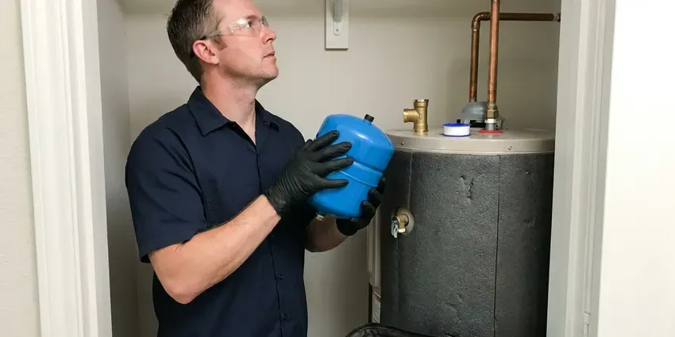

Sewage Ejector Pump Installation in Concord, NH
Ejector, grinder and macerating systems, installed in Concord, NH with check valves and shutoffs.
- Check Valve and Shutoff
- Price in Writing
- Fast Pump Replacements
- Grinder Systems Available

Get an Ejector Pump Quote in Concord, NH
Call (844) 442-1569 for a no-cost walk-through on a new ejector system or a replacement pump.
Below-Grade Plumbing That Pumps Right in Concord, NH
FVR Plumbing installs sewage ejector pumps for fixtures that sit lower than your main sewer or septic line. A sealed basin goes below the slab, a pump rated to pass two-inch solids goes in it, and we add a check valve, a shutoff and a roof vent. We test with water. Every system gets run through several full cycles before we leave the house.
Work we handle every week:
- High water alarms, audible or Wi-Fi
- Proper electrical and float settings for new pumps
- Sealed basins with gas-tight lids and their own vent

Additional Plumbing Installation Services in Concord, NH
We install water heaters, pumps, lines, and fixtures across Concord, NH with careful, permitted work that passes inspection the first time.


Customers
Why Choose FVR Plumbing for Sewage Ejector Pump Installation in Concord, NH?
Our plumbers size an ejector by lift, run and fixture count, not by what is on the truck. A pump that has to push waste 9 feet up and 40 feet across needs a different curve than one lifting 6 feet straight to a drain right overhead. The curve decides it. Matching it means fewer starts and a longer motor life.
- Code Compliance, Sealed lid, roof vent and check valve on each install.
- Right Pump, Ejector, grinder or upflush, matched to the job.
- Solids Rated, Two-inch solids handling for toilet waste.
Citywide Coverage
From older homes with toilets below grade to new custom builds with lower-level suites, we install ejectors all over Concord. Many older pits are open or poorly sealed and leak sewer gas, so a gasketed, vented lid is often the first fix we suggest. Odor is a warning.
Experienced Team
Every plumber at FVR Plumbing handles both installs and repairs. Someone who swaps a float one day may set a full basement bath the next week, so they know how layout choices become easy or hard service calls later. It shows in the work.
Safety-First Approach
Every install follows the plumbing code adopted in Concord and New Hampshire, covering vent, valves and electrical. That means a check valve and shutoff on discharge, a gas-tight lid, a properly sized vent and wiring rated for a damp space below grade. It passes inspection.
Trusted Certified Concord Plumbing Services Professionals
At FVR Plumbing, we are proud to offer certified plumbing services throughout Concord, NH. Credentials matter in this trade. Every repair, install and maintenance visit follows strict safety and quality rules, and the plumbers doing the work carry recognized industry credentials.
Call Us Now PHCC Plumbing Contractor Recognition
PHCC Plumbing Contractor Recognition Better Business Bureau (BBB) Accreditation
Better Business Bureau (BBB) Accreditation Angi Certified Pro
Angi Certified Pro ISO 9001 Quality Management Certification
ISO 9001 Quality Management CertificationEjector Pump Jobs We Handle in Concord, NH
Cost-Effective Sewage Ejector Pump Upgrades in Concord, NH
Upgrading an old ejector does not always mean a new basin. With a sound basin, a new pump, fresh check valve, shutoff and alarm give you most of a new system for far less. We tell you if the basin is done.

Residential Sewage Ejector Pump Installation in Concord
Residential ejector systems in Concord serve basement bathrooms, lower-level suites and any fixture that sits too low to drain by gravity to the sewer. Each system needs a sealed basin, a pump with a float, a check valve and a vent. Simple parts, exact install. Most problems come from the install, not the hardware, so we take our time on the vent and the lid seal.
Sump Pump vs. Sewage Ejector Pump Installation in Concord
Sump pumps and ejector pumps look alike in a catalog but do very different jobs. A sump pump moves groundwater from a perimeter drain to the yard, while an ejector moves sewage from toilets and sinks to the sewer, and the ejector basin has to be sealed and vented because of the gas. They are not interchangeable.
Ejector Pump Alarms and Backup Options in Concord
A high water alarm should be on any ejector basin, since a pump failure can lead to a sewage backup quickly. Audible alarms on their own power or Wi-Fi alarms that text you give warning while the pit is still filling, not after waste reaches the floor. A battery backup sump pump and a backwater valve are smart protection for any finished basement. Backup power can help.
Sewage Ejector Pump Basin Installation in Concord, NH
The basin holds everything, and a 30-gallon size is common for a single basement bathroom. A larger basin means longer, less frequent cycles that spare the motor and switch, so we go bigger when the pit takes a laundry or several fixtures. Every lid gets sealed.
New Construction Sewage Ejector Pump Installation in Concord, NH
On a new build, the basin goes in before the slab is poured. That is the cheapest time, since there is no concrete to cut, and we stub the drains, the vent and the discharge to the plans so the rough-in inspection goes smoothly. Builders like the timing.
Laundry and Wet Bar Ejector Pumps in Concord, NH
Below-grade laundry rooms and wet bars produce gray water that still needs to be lifted to the sewer. A compact gray water pump handles it, sized for the 15 or more gallons a washer drops at once, with a lint filter to keep fibers off the impeller. Filters save impellers.

Basement Bathroom Ejector Systems in Concord
Basement bathrooms sit below the building sewer, so every fixture drains to a sealed pit instead of flowing by gravity. We saw the floor, trench drains to the basin, set it, carry a two-inch vent to the roof and run discharge to the main drain through a check valve and shutoff. The slab gets repoured.
Sewage Ejector Pump Installation Near Me in Concord, NH
Planning a basement bathroom? Set up a no-cost walk-through with our local crew. We locate the main drain, plan the vent route, check the spot for the basin, and hand you a written price before leaving. No guesswork on cost. Most estimates run under an hour.
Searching ejector pump repair near me in Concord usually means the alarm is going off or the basement drains stopped. FVR Plumbing is local, so a plumber with a pump can often reach you that day, and the same person who diagnoses it installs it. No hand-offs. You deal with one plumber.
FVR Plumbing at a Glance
- Licensed and insured plumbers serving Concord, NH
- 24/7 emergency service with same-day scheduling
- Clear written estimates, no hidden fees
- 4.9-star rated by 840+ New Hampshire customers
Concord Map
Concord Information
- Population
- 44,629
- Area codes
- Local
- Service area
- Concord and towns within a 40 mile drive
- Nearby
- Manchester, Laconia, Derry, Londonderry
Most ejector pumps last 7 to 10 years, and a high water alarm is the cheapest way to hear about a failure before it backs up.
Expert Services
Call FVR Plumbing for honest, reliable plumbing from people who know the trade in Concord, NH.
Our Specialized Plumbing Services in Concord, NH
At FVR Plumbing, you get every kind of plumbing service from one company across Concord, NH. We go from leak detection all the way to full system installations, for homes and commercial buildings, and we do it quickly at a fair price. Here are the core services we offer:


What to Expect From an Ejector Pump Install in Concord, NH
Here is how an ejector job runs, start to finish, in Concord, NH.
Call for an Estimate
Call (844) 442-1569 and describe what drains to the basement. We book a time that suits you.
Site Visit
A plumber looks at your Concord home's drain, vent path and basin location. A written quote is yours before we go.
Install
We set the basin, install the pump and valves, vent it and wire the alarm. Then we test it with water.
Frequently Asked Questions About Sewage Ejector Pump Installation in Concord
Replacing a pump in an existing basin usually costs $900 to $2,000. A new system with basin, venting and floor work usually starts higher.
Liberty and Zoeller, for the most part. We choose the model from your lift and pipe run.
Strange noises from the pit, short, frequent cycles, slow basement drains and odors. A pump that trips the alarm more than once in a few months is usually close to the end.
New installations usually need a permit and inspection. Simple pump swaps may not, and we check the local rules.
You get a full labor warranty from FVR Plumbing, and the pump is covered by its maker. The estimate lists the exact terms.
Usually, yes. A new ejector system needs a plumbing permit and an inspection of the basin, vent and discharge before the floor is closed. We handle both.
Many residential jobs can, especially replacements. A new system with floor cutting may need a second day and a patch after inspection.
A new system tends to run one or two days. It includes the floor cut, excavation, basin and pump, drain and vent connections and the discharge, then the concrete after inspection. Pump swaps are faster.
What People Are Saying About Our Plumbing Experts?

Lisa C.
Water was pouring out from under the washing machine on a holiday weekend. FVR Plumbing talked me through closing the valves over the phone and had a plumber at the house within ninety minutes. It was a burst fill hose.
Emergency Plumbing · Rochester, NHRachel N.
Hard water was leaving white crust on every faucet and our dishwasher was struggling. The tech tested the water, recommended a softener sized for a family of five, and installed it with a bypass valve in one afternoon. The spots on our glasses are gone.
Water Softener · Laconia, NH
Paul B.
Our pit pump ran nonstop even in dry weather. The plumber found the check valve was stuck open, so the same water kept cycling back into the pit. New valve, new float switch, done in an hour. It runs quiet now.
Sump Pump · Concord, NHGreg S.
I manage a small strip center with six tenants. FVR Plumbing handles our annual backflow testing and fixed a recurring clog in the shared sewer line that had been backing into the nail salon. Their reports come in clean and on time.
Commercial Plumbing · Concord, NH
Kevin O.
Before buying our house I paid for a sewer camera inspection. FVR Plumbing found a belly in the line that held standing water about forty feet from the cleanout. We used the video to get the sellers to fix it before closing.
Sewer Camera Inspection · Londonderry, NHBrian W.
I smelled gas behind the dryer and called right away. The plumber found a corroded flex connector, replaced it, and pressure tested the whole line before turning the gas back on. He let me watch the gauge hold steady for fifteen minutes.
Gas Line Repair · Rochester, NH